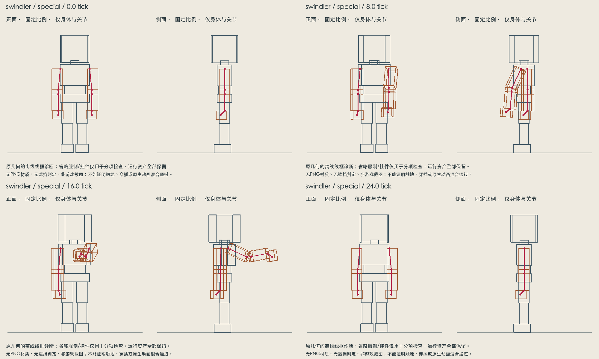
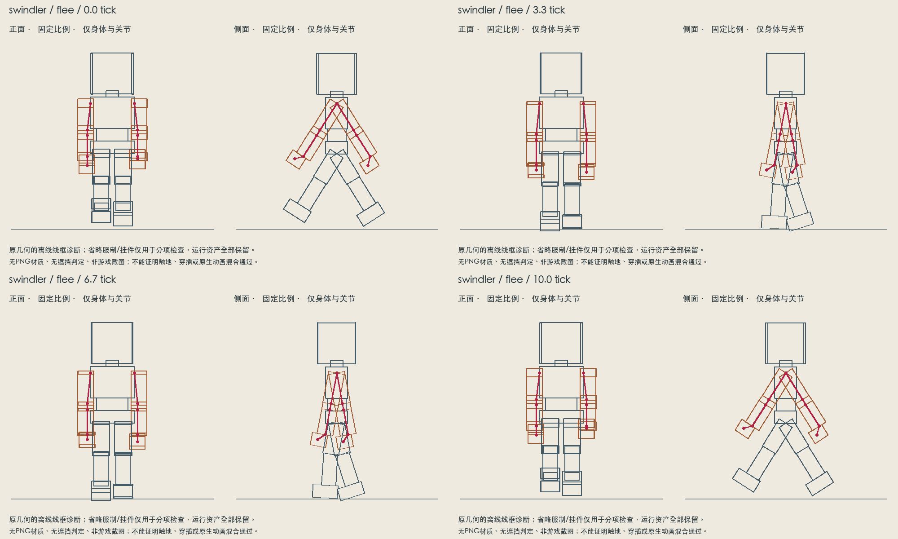

骗子：装伤、揭穿、逃跑与读档
一个既有身体状态闭环的只读研究。完整追到触发、骨骼轨道、退出和存档边界；未改模型与动作，非游戏验收。
- Existing registered swindler is human family, neutral=true, not flying/aquatic. Fresh deceptionStage/fleeTicks/animationTicks are zero; synced STATE defaults0. No new entity, shape or production target introduced.
- On each alive server aiStep, while deceptionStage<3, the mob clears target, stops navigation and requests animate(5,2), selecting special. This already happens at stage0 before first interaction. Two ticks is a refreshed state hold, not the1.2-second clip duration or proof that the animation restarts every2ticks.
- Interaction dispatcher calls swindle only for swindler. Offhand returns PASS; client returns SUCCESS without performing transaction state mutation. First server mainhand interaction stage0->1 requests special and injured message. Message identity does not prove an injury-specific body pose.
- At stage1 mainhand copper_coin sets customer UUID and stage2; noncreative splits one coin into stolen, creates tagged false medicine and inserts/drops it. Body stays special via next aiStep. Item/NBT predicates are read only as state triggers; no item art, economy or reward logic altered.
- At stage2 only the stored customer sneaking with DEAD_BUSH whose cod4Swindler UUID equals this actor can expose it: stage3, fleeTicks200, target cleared, navigation stopped, STATE3/flee requested200. Wrong player, wrong actor token or unsneaked interaction does not take that branch.
- Alternative accepted hurt exits deception: after super.hurt succeeds, neutral branch requests flee80/hold30, then swindler branch overwrites stage3/flee200/hold200; player attacker also becomes customer. Generic evade call does not override this actor: SecondaryCombatActions.evade is red_fox-only. Other specialized combat begin switch has no swindler action.
- Synced integer STATE is the body presentation channel; deceptionStage/customer/fleeTicks are separate server fields. The single body controller with transition4 requests thenLoop(animation()). STATE5 selects special; STATE3 selects flee. Exact4.8.4 controller blending/repeated-equal-RawAnimation internals remain unreviewed; do not substitute cached4.4.4 core behavior.
- Complete special clip is looptrue/1.2sec: head yaw-3,+3,-3; otherwise static thighs/knees and left arm; right upper arm pitch0,-25,65,0 at0,.4,.8,1.2sec; right elbow0,20,35,0; chest yaw0,-12,15,0. This reads as turning/presenting/raising a hand, not a separately authored limp, crouch or wound-clutch pose. No shape/action was changed.
- Complete flee clip is looptrue/.5sec: opposite arm/thigh pitch+/-32, knees0,10.6667,0 and head yaw-3,+3,-3. This is a speed-independent looping run request, not measured foot-ground locomotion. idle is1.8sec with amplitude2. Existing line-frame sheets were visually reinspected only for special/flee; no new reference credit or gameplay proof.
- Chest is below waist/pelvis/body/root; right hand inherits chest -> right_upper_arm -> right_elbow -> right_forearm -> right_wrist -> right_hand. No right_hand/wrist track in special/flee. Existing abacus attachment parent is right_hand at[-4,9,-1]; it inherits this chain, no object model/PNG/UV authored.
- Flee navigation Goal MOVE/LOOK runs while fleeTicks>0, selects lastHurtByMob or customer player and requests a point8 units away at1.4 navigation speed. If neither resolves it issues no new navigation request, while flee STATE/timer may continue. No collision/path success or guaranteed movement asserted.
- Exit order matters: aiStep decrements fleeTicks and animationTicks before STATE fallback. With fresh animate(3,200), the last hold tick may leave STATEflee even when both counters reach0; following fallback evaluates flee/target/horizontal motion -> flee/hunt/wander/idle. It does not reset deceptionStage3 or reenter special. Existing retaliation target can yield hunt even though swindler melee canUse is excluded.
- Save writes Cod4Deception/Cod4Flee/Cod4Customer, stolen and friendly/cooldown. Read clamps deception0..3 and flee0..200 and resets combat action state; it does not persist STATE, animationTicks or clip phase. Reload stage0..2 re-requests special on next alive server aiStep. Reload stage3 with positive remaining flee reselects flee after decrement, but saved flee1 expires before fallback and may select another state. No guaranteed same-phase or4-tick blend continuity across load.
- Death: custom aiStep state update returns when not alive; state does not select a dedicated death clip. Previous exact GeckoLib4.8.4 renderer study supplies separate native-style overlay and whole-model death roll. This is source linkage, not new death runtime acceptance or a reason to remodel approved assets.
既有身体线框诊断，非游戏截图


完整轨道、来源哈希、观察与限制 · 保留原范围的历史参考账